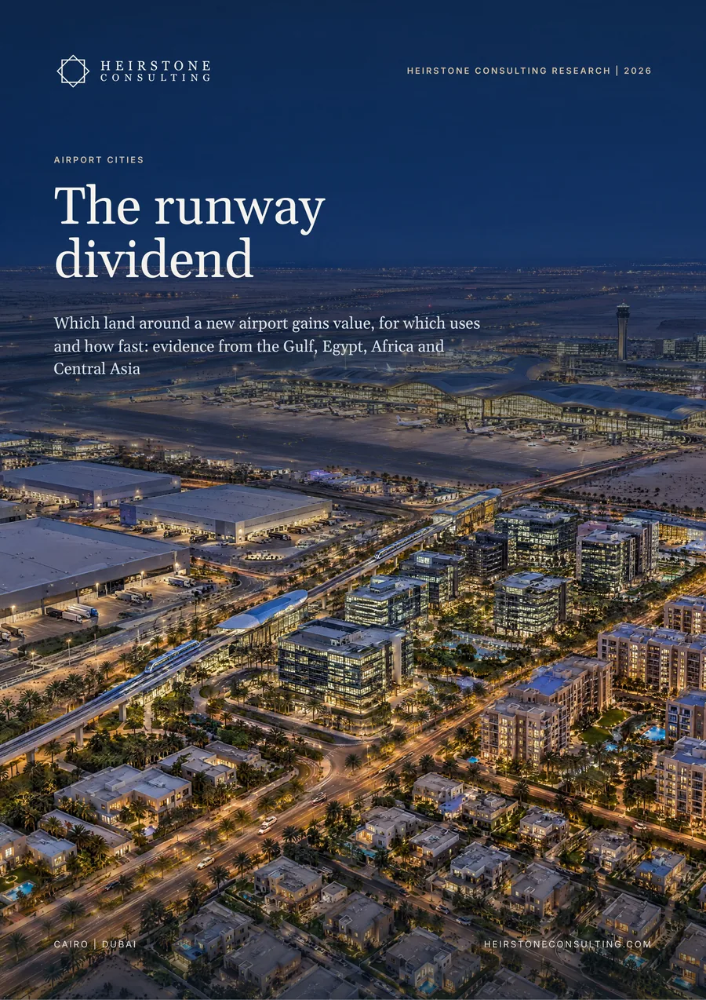

Special Projects
Which land around a new airport gains value, for which uses and how fast, and who captures it: evidence from the Gulf, Egypt, Africa and Central Asia.
Also available in French and Arabic: Villes aéroportuaires: Le dividende de la piste and مدن المطارات: عائد المدرج. Choose the language when you request the report.

The report in six numbers
years after opening before Hong Kong, Incheon and Changi added destination real estate. Dubai South was launched four years before the first cargo flight at Al Maktoum International.
off-plan against resale apartment sales by value in Dubai South in 2025: AED 10.23 billion against AED 0.91 billion (Heirstone analysis)
of value lost per decibel of aircraft noise by vacant land near Vancouver airport in a 1993 study, against 0.65 to 0.90% for homes
industrial rent premium of US airport submarkets over their metro areas, from O'Hare to Memphis. The premium is highest where land by the airfield is limited.
named hotel keys in three schemes beside the Grand Egyptian Museum: TMG's hotel of about 495 rooms, the 400-key Aldau GEM Hotel and the 303-room Sofitel Legend Pyramids Giza (Heirstone analysis)
rise from 2024 to 2026 in the investment potential of New Tashkent's land, from US$0.6 million to US$3.5 million a hectare, as reported by the city's directorate before its airport opens
In brief
We dated the build-out of airport cities on four continents and assembled 32 of them into the Heirstone Airport Cities Benchmark 2026. The sequence of uses is stable; its speed, and who captures the value, are now set by land policy.
Freight and logistics come first, aviation business and offices next, destination uses and homes last. Hong Kong opened AsiaWorld-Expo seven years after its airport, Incheon its resorts 16 to 22 years after, Changi its Jewel after 38. Dubai South was launched in 2006, four years before Al Maktoum International's first cargo flight, and Senegal decreed a 718 ha zone beside Blaise Diagne International Airport in the airport's opening year.
US rules allow industry up to 85 DNL with insulation, offices to 80 and homes only below 65. Homes inside the contours lose about 0.5 to 1% of value per decibel; vacant land near Vancouver lost 0.16%. Industrial rents near US airports carry a 13% premium on average, from 47.1% at O'Hare, where land is scarce, to 0.3% at Memphis.
In Dubai South, developers sold AED 10.23 billion of apartments off plan in 2025, eleven times the value of resales, and apartment resale prices rose 27.6%, on a broker's analysis of Land Department records. New Tashkent's directorate puts the investment potential of its land at US$3.5 million a hectare in 2026, up from US$0.6 million in 2024.
Schiphol earns 8.5% of its revenue from rents on EUR 1.9 billion of investment property; Abu Dhabi's KEZAD reported AED 2.87 billion of revenue in 2025 at a 54% EBITDA margin; Egypt's ACUD reported EGP 19.8 billion of pre-tax profit for 2022. An owner that sells all its land at the first phase hands the later uplift to the buyer.
Demand at Sphinx International Airport rose 30 to 35% after the Grand Egyptian Museum opened, according to the Egyptian Airports Company, and about 1,200 named hotel keys are planned beside the museum. Capital International Airport serves the New Administrative Capital, where more than 400 developers are active and the first international route opened in 2026. A 2026 directive on investment zones around airports makes both a national model.
What it means
Designate airport-city land in the same decision as the airport, release it in tranches matched to demand, and build the rail link before the homes.
Keep the land nearest the terminal and lease it, and sell where a partner brings an anchor tenant.
Buy the programme and the station, and price each parcel by its noise contour.
Inside the full report
Heirstone datasets
airport cities and airport-linked districts in the Heirstone Airport Cities Benchmark 2026
in the Heirstone Runway Ladder, from the cargo apron to family housing
Built from public sources current at October 2026. Every figure is referenced in the report, and figures we derive by combining published numbers are labelled Heirstone analysis.
The district of logistics, offices, hotels, attractions and homes that grows on the land around an airport. In the 32 airport cities and airport-linked districts of the Heirstone Airport Cities Benchmark 2026, land filled in the same order: freight and logistics first, aviation business and offices next, destination uses and homes last.
Homes inside the noise contours lose about 0.5 to 1% of value per decibel, while vacant land near Vancouver airport lost 0.16% in a 1993 study. US rules allow industry up to 85 DNL with insulation, offices to 80 and homes only below 65, so noise decides the use and scarcity decides the price.
Years before the first flight. In Dubai South, developers sold AED 10.23 billion of apartments off plan in 2025, eleven times the value of resales, and New Tashkent's directorate puts the investment potential of its land at US$3.5 million a hectare in 2026, up from US$0.6 million in 2024.
Special Projects
Heirstone Consulting Research
Tell us what you are deciding and by when. A senior adviser replies within one business day.
Contact us